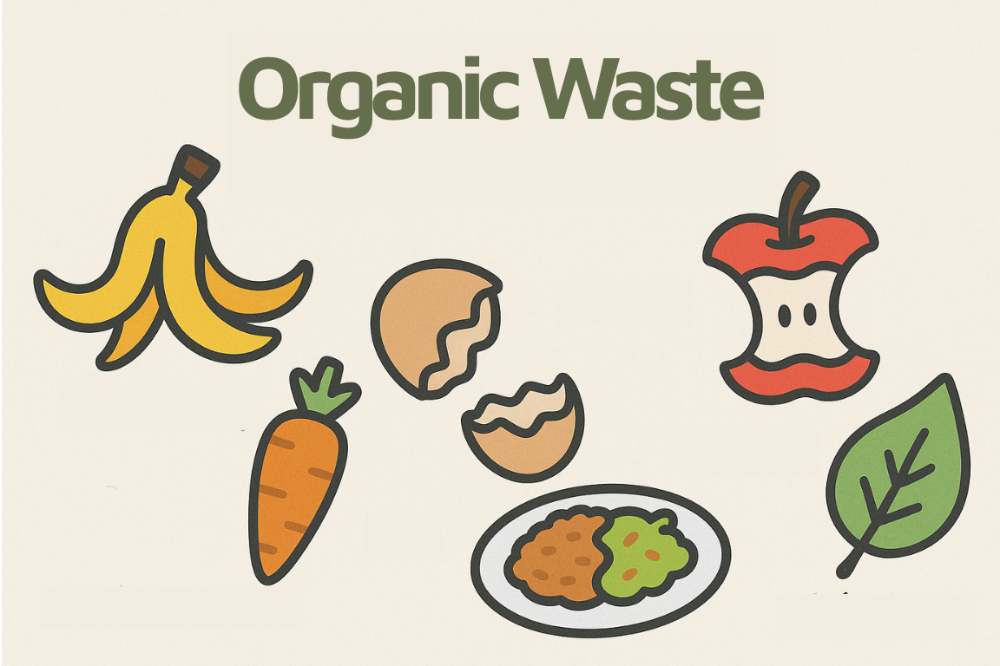
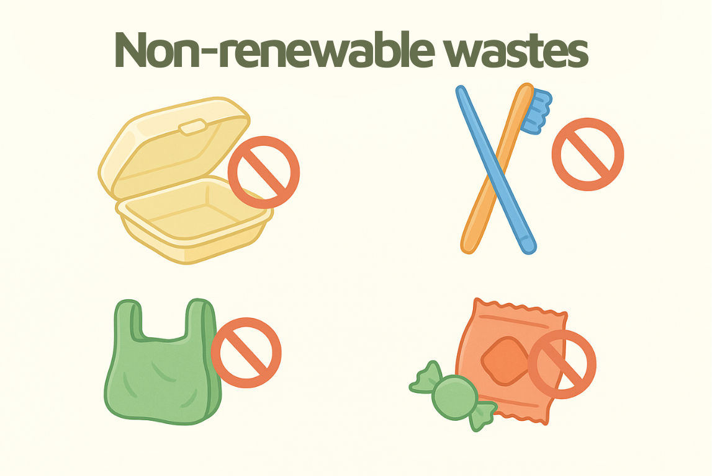

1. How many types of waste are there?
Waste isn't just "trash." When sorted correctly, it becomes a valuable resource! Here are the two primary categories:
Organic Waste – Biodegradable and nutrient-rich
| Examples: | Food scraps, fruit peels, leaves, grass clippings, tea bags, eggshells... |
➡️ Pro-tip: Once processed, these can be turned into nutrient-dense compost for your garden!

♻️ Recyclables: Plastic bottles, paper, cardboard, aluminum cans...
➡️ These items are cleaned and reprocessed into brand-new products.

🚫 Non-recyclable or difficult to recycle: Ceramics, porcelain, broken glass, unidentified flexible plastics, contaminated materials.
➡️ These items are either sent to landfills or incinerated at a high cost.

2. How to Read Recycling Codes
Every plastic product has a triangular recycling symbol with a number from 1 to 7 inside. This is the "identity card" for different types of plastic:
| Code | Common Items | Recyclable? | Storage Temp |
|---|---|---|---|
| 1 – PETE | Water bottles, packaging | ✅ Yes (limit reuse) | Below 40°C |
| 2 – HDPE | Milk jugs, detergent bottles | ✅ Safe & highly recyclable | Below 120°C |
| 3 – PVC | Raincoats, water pipes | ⚠️ Not recommended | Releases toxins above 81°C |
| 4 – LDPE | Noodle bags, paper milk cartons | ✅ Recyclable, do not reuse often | Below 80°C |
| 5 – PP | Yogurt cups, plastic spoons | ✅ Very safe & highly recyclable | Below 120°C |
| 6 – PS | Styrofoam cups, food containers | ❌ Not recyclable | Deforms and toxic with heat |
| 7 – Other | Phone cases, electronics | ❌ Not recyclable | Contains many impurities |
🧐 Quick Tip: If you're unsure, look for the triangle symbol on the bottom of the product—that's your recycling code!